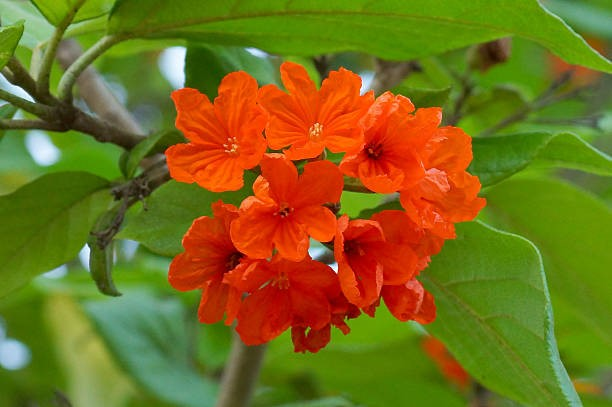

Cordia sebestena grows to a maximum height of 8–9 m (25–30 ft) at maturity, with a nearly equal spread. The crown is round to vase-shaped. Branches tend to be somewhat drooping, and the tree is naturally multitrunked. When only a single trunk is allowed to develop, it can attain a diameter of 30 cm (12 in) The dense, evergreen foliage consists of dark green, leathery, alternate, ovate leaves, 18 cm (7 in) long, with wavy margins. These leaves are covered with small hairs, lending them a rough, "sandpapery" texture Flowers are produced in clusters at branch ends throughout the year, particularly in the spring and summer. Flowers are 5 cm (2 in) wide, red-orange in color, tubular, flaring (salverform) with 5–7 lobes, bearing 5–7 stamens of similar height. The species is heterostylous and presumably self-incompatible.[7] Pear-shaped fruits follow the flowers, averaging 5 cm (2 in) in length. Fruits are fragrant and edible, but not flavorful.

Cordia sebestena is widely planted throughout the tropics as an ornamental plant in gardens for its showy flowers. It is a slow-growing plant, and sheds enough leaves and fruit to require some upkeep. The wood is rather light in density, but branches are not prone to breakage. The tree should be pruned in its youth to establish a structure, as it is prone to low branching. Soil tolerance is fairly broad, provided the soil drains well. Cordia sebestena tolerates drought, but not frost. It is not particularly susceptible to pests and diseases, other than the geiger tortoise beetle,which can cause occasional defoliation. This plant tolerates salt spray found near the ocean. It enjoys full sun, and can grow in a part-day sun situation as well. Its uses include: street tree, shade tree, even as a container subject in its youth. It is planted in traffic medians and parking lots, and is a useful seaside subject.